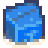

Cajas de suministros
Ir a la navegación
Ir a la búsqueda
| Cajas de suministros | |
|  |
|
| Información | |
| Origen | Granja de Playa |
| Precio de venta | No puede venderse |
- Este artículo trata sobre el objeto de granja de playa. Para el objeto en las minas, vea, mira Las minas#Cajas y barriles.
Las cajas de suministros a veces llegan a la orilla de la Granja de Playa. El contenido de la caja es aleatorio y depende en parte de la ubicación de la caja y de cuánto se ha mejorado la granja.
Contenido
Sin mejoras
|
Una mejora
|
Dos mejoras
|
Historial
- 1.5: Introducido.